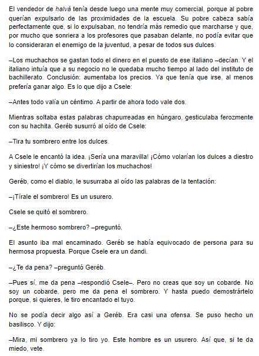

Es una pieza de código que permite a diferentes aplicaciones comunicarse entre sí y compartir información y funcionalidades.
| Web worker | Función |
|---|---|
| Es un JavaScript que se ejecuta en segundo plano, sin afectar el rendimiento de la página. | Permite que los scripts se ejecuten en segundo plano sin interrumpir la experiencia del usuario en la página web. |
El siguiente web worker nos ayudará a saber cuál es el tiempo que tarda en leer el siguiente fragmento
Cronometro: s
